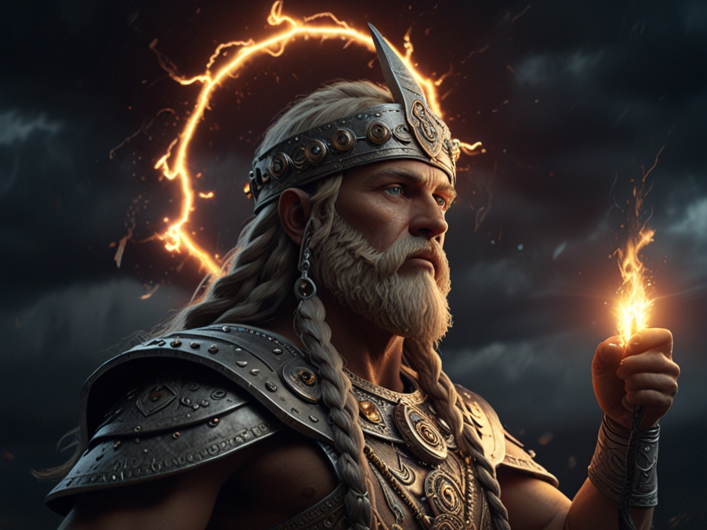
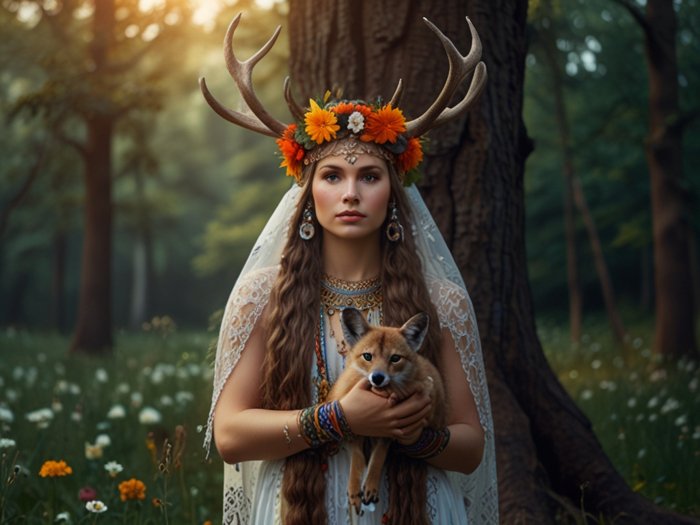
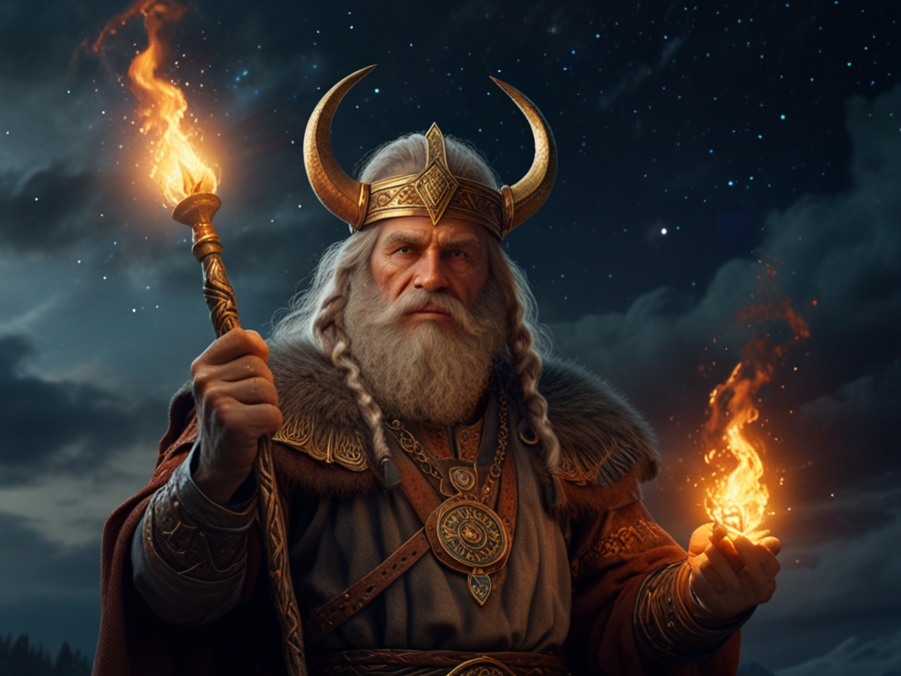
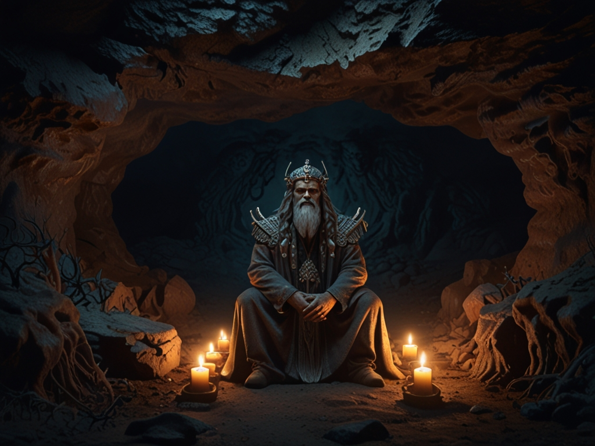

Perun
Perun jest jednym z głównych bogów słowiańskich, odpowiedzialny za burzę, błyskawice, wojnę i sprawiedliwość.
Mokosz
Mokosz jest uznawana za boginię ziemi, płodności i kobiet, czczona szczególnie przez rolników i tkaczki.
Swaróg
Swaróg to bóg słońca i ognia, czczony jako twórca nieba i gwiazd w mitologii słowiańskiej.
Weles
Weles to bóg magii, podziemi i krainy zaświatów - Nawi - przebywajacy w korzeniach Drzewa Życia.